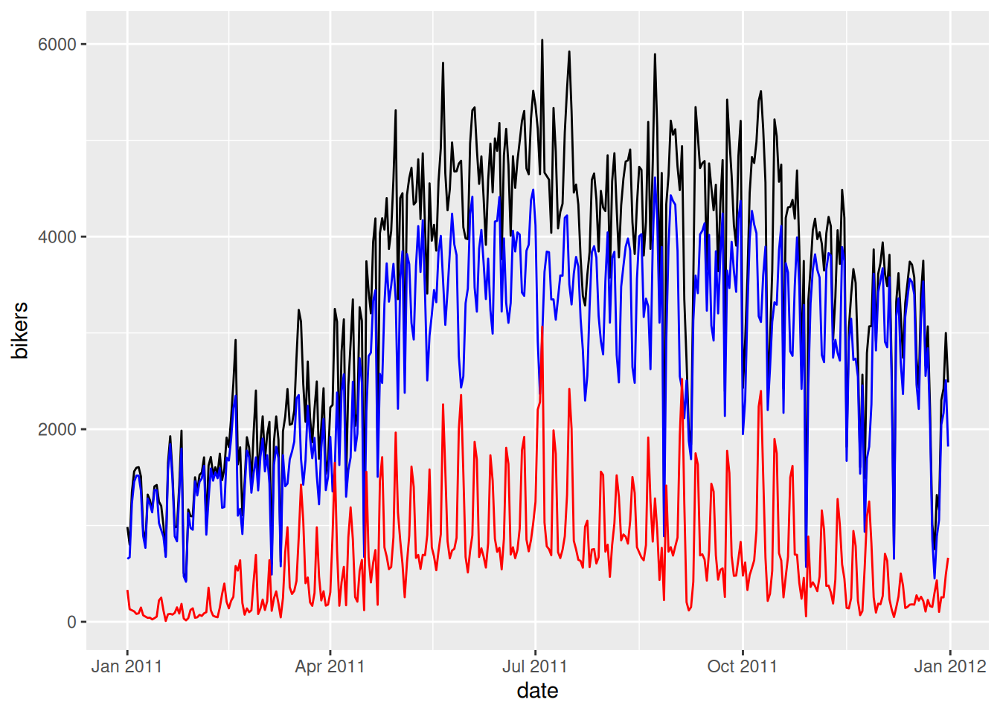

library(ISDSdatasets)
library(tidyverse)
library(moderndive)
library(lubridate)
library(patchwork)Appendix B — Exercise solutions
B.1 Chapter 1
Exercise 1.1 b. Quarto Document
Exercise 1.2 a. error
Exercise 1.3 a. TRUE
Exercise 1.4 a. TRUE
Exercise 1.5 b. FALSE
Exercise 1.6 e. 15
Exercise 1.7 b. Data on a flight
Exercise 1.8 c. quantitative
z <- 12*31
add_on <- 12
z + add_on[1] 384glimpse(titanic)The dataset has 418 rows (passengers) and 11 variables. The variables identify various passenger information such as name, age, sex, ticket class, number of siblings/spouses on board, fare cost, port the left from, and whether or not they survived.
head(titanic)# A tibble: 6 × 11
PassengerId Survived Pclass Name Sex Age SibSp Parch Ticket Fare Embar…¹
<dbl> <dbl> <dbl> <chr> <chr> <dbl> <dbl> <dbl> <chr> <dbl> <chr>
1 892 0 3 Kell… male 34.5 0 0 330911 7.83 Q
2 893 1 3 Wilk… fema… 47 1 0 363272 7 S
3 894 0 2 Myle… male 62 0 0 240276 9.69 Q
4 895 0 3 Wirz… male 27 0 0 315154 8.66 S
5 896 1 3 Hirv… fema… 22 1 1 31012… 12.3 S
6 897 0 3 Sven… male 14 0 0 7538 9.22 S
# … with abbreviated variable name ¹EmbarkedThe head() function shows the first 6 rows of the dataset. Based on this, I expect the tail() function to show the last 6 rows of the dataset.
unique(titanic$Embarked)[1] "Q" "S" "C"There are 3 unique ports of embarkation: Q, S, C (Queenstown, Southampton, Cherbourg).
B.2 Chapter 2
Exercise 2.1 b. geom_line(), c. geom_col(), e. geom_histogram()
Exercise 2.2 d. geom_point()
Exercise 2.3 b. changing the transparency, e. jittering the points
Exercise 2.4 b. When you want to split a particular visualization of variables by another variable
Exercise 2.5 b. geom_col()
Exercise 2.6 a. grouped boxplot
Exercise 2.7 b. linegraph
Exercise 2.8 c. scatterplot
Exercise 2.9 d. boxplot
Exercise 2.10 There is a strong positive non-linear (exponential) relationship. We can see by the blue line (line of best fit) that the data does not match a linear line. This tells us that as someone spends more time in the grocery store, they also spend more money.
Exercise 2.11 The histogram is unimodal and left skewed.
ggplot(
covid_sub,
aes(x = date, y = new_confirmed, color = state_abbr)
) +
geom_line()
Florida has significantly more covid cases than Illinois in the months of July and August 2021. The spikes to 0 could indicate testing did not occur on those days. Illinois has a positive “fairly linear” trend. Florida has a nonlinear trend where cases are increasing until around August 15th, at which point cases start to decrease.
ggplot(nba, aes(x = factor(win)) ) +
geom_bar() +
facet_wrap(~ player)
A win is indicated with a “1”. All three players have more wins than losses. LeBron has the most total wins and Jordan has the least total losses. But Jordan having less wins and losses is relative because he also played the least number of games.
ggplot(nba, aes(x = ft_percent, y = fg_percent)) +
geom_jitter(alpha=0.1)Warning: Removed 490 rows containing missing values (`geom_point()`).The relationship between the field goal percentage and free throw percentage seems to have no association. This means that whether a player made all of their free throws or only 50% of their free throws, it will not impact their shooting during the game (field goal percent). If we draw a circle around the points it is fairly horizontal (indicating no positive or negative trend) and a large oval.
ggplot(nba, aes(x = player, y = pts)) +
geom_boxplot() +
facet_wrap(~ season)Warning: Removed 354 rows containing non-finite values (`stat_boxplot()`).#Alternate way to visualize
ggplot(nba, aes(x = pts)) +
geom_histogram() +
facet_grid(player ~ season, scales = "free")`stat_bin()` using `bins = 30`. Pick better value with `binwidth`.Warning: Removed 354 rows containing non-finite values (`stat_bin()`).
ggplot(
covid_sub,
aes(x = date, y = new_confirmed, color = state_abbr)
) +
geom_line() +
theme_minimal() +
labs(x = NULL) +
theme(axis.text.x = element_text(angle = 45, hjust = 1))
B.3 Chapter 3
Exercise 3.1 c. x %>% c() %>% b() %>% a()
Exercise 3.2 d. arrange() , g. filter() , c. mutate()
Exercise 3.3 a. 12 row and 5 columns
Exercise 3.4 b. To make exploring a data frame easier by only outputting the variables of interest
Exercise 3.5 a. increase
Exercise 3.6 c. median and interquartile range; mean and standard deviation
Exercise 3.7 b. \(mean < median\)
Exercise 3.8 a. These key variables uniquely identify the observational units
Exercise 3.9 d.
Exercise 3.11 a. e. (there is no variable called passenger)
nba %>%
group_by(player) %>%
summarize(avg_ft= mean(ft, na.rm=TRUE))# A tibble: 3 × 2
player avg_ft
<chr> <dbl>
1 Kobe Bryant 6.19
2 LeBron James 5.92
3 Michael Jordan 7.03nba %>%
group_by(player) %>%
mutate(spread = pts_tm - pts_opp ) %>%
ungroup() %>%
slice_max(spread) %>%
select(player, pts_tm, pts_opp, spread)# A tibble: 1 × 4
player pts_tm pts_opp spread
<chr> <dbl> <dbl> <dbl>
1 Kobe Bryant 112 57 55# Alternate code
nba_spread <- nba %>%
group_by(player) %>%
mutate(spread = pts_tm - pts_opp ) %>%
select(player, pts_tm, pts_opp, spread)
nba_spread %>% arrange(desc(spread))# A tibble: 4,747 × 4
# Groups: player [3]
player pts_tm pts_opp spread
<chr> <dbl> <dbl> <dbl>
1 Kobe Bryant 112 57 55
2 Michael Jordan 129 82 47
3 Kobe Bryant 113 67 46
4 Kobe Bryant 113 67 46
5 Michael Jordan 114 69 45
6 Michael Jordan 140 96 44
7 LeBron James 130 86 44
8 Michael Jordan 123 81 42
9 Michael Jordan 111 69 42
10 Michael Jordan 96 54 42
# … with 4,737 more rowsKobe Bryant had the largest win spread, winning the game by 55 points.
titanic %>%
group_by(Pclass) %>%
summarize(fare_calc= sum(Fare, na.rm=TRUE)) %>%
arrange(desc(fare_calc))# A tibble: 3 × 2
Pclass fare_calc
<dbl> <dbl>
1 1 10088.
2 3 2704.
3 2 2065.covid_join <- covid_states %>%
group_by(location_key, state) %>%
summarize(total_new_confirmed=sum(new_confirmed, na.rm=TRUE),
total_new_deceased=sum(new_deceased, na.rm=TRUE),
total_new_recovered=sum(new_recovered, na.rm=TRUE),
total_new_tested=sum(new_tested, na.rm=TRUE))`summarise()` has grouped output by 'location_key'. You can override using the
`.groups` argument.covid_joined <- covid_join %>%
inner_join(covid_dem, by= "location_key")
covid_joined# A tibble: 59 × 18
# Groups: location_key [59]
locat…¹ state total…² total…³ total…⁴ total…⁵ popul…⁶ popul…⁷ popul…⁸ popul…⁹
<chr> <chr> <dbl> <dbl> <dbl> <dbl> <dbl> <dbl> <dbl> <dbl>
1 US_AK Alas… 2.80e5 1316 7136 4.11e6 7.33e5 4.25e5 3.92e5 115198
2 US_AL Alab… 1.47e6 20047 287739 2.32e6 5.02e6 2.51e6 2.68e6 621981
3 US_AR Arka… 9.24e5 11861 315506 2.74e6 3.01e6 1.59e6 1.65e6 411655
4 US_AS Amer… 8.04e3 33 0 2.14e3 4.97e4 NA NA NA
5 US_AZ Ariz… 2.24e6 30982 0 7.91e6 7.15e6 4.03e6 4.09e6 1080975
6 US_CA Cali… 1.02e7 93827 0 1.82e8 3.95e7 2.05e7 2.09e7 5297960
7 US_CA_… Cali… 2.21e5 0 0 4.40e6 8.74e5 4.22e5 4.14e5 61427
8 US_CO Colo… 1.63e6 13235 0 6.42e6 5.77e6 2.98e6 2.98e6 782811
9 US_CT Conn… 8.69e5 11180 5454 6.52e6 3.61e6 1.82e6 1.93e6 416756
10 US_DC Dist… 1.37e5 1377 34968 1.26e6 6.90e5 2.97e5 3.35e5 58373
# … with 49 more rows, 8 more variables: population_age_10_19 <dbl>,
# population_age_20_29 <dbl>, population_age_30_39 <dbl>,
# population_age_40_49 <dbl>, population_age_50_59 <dbl>,
# population_age_60_69 <dbl>, population_age_70_79 <dbl>,
# population_age_80_and_older <dbl>, and abbreviated variable names
# ¹location_key, ²total_new_confirmed, ³total_new_deceased,
# ⁴total_new_recovered, ⁵total_new_tested, ⁶population, ⁷population_male, …covid_pop <- covid_states %>%
filter(state_abbr %in% c("CA", "TX", "FL", "NY"))library(lubridate)
covid_confirmed <- covid_pop %>%
filter(date<="2021-12-31", date>="2021-01-01") %>%
mutate(week = week(date)) %>%
group_by(week, state) %>%
summarize(total_confirmed = sum(new_confirmed))`summarise()` has grouped output by 'week'. You can override using the
`.groups` argument.ggplot(data=covid_confirmed,
aes(x=week, y=total_confirmed, color=state)) +
geom_line()
The linegraph shows that the states had the similar pattern overall. The peaks seem to correspond to weeks of holidays and school starting where people are gathering.
B.4 Chapter 4
Under Construction
Currently working on exercise solutions.
B.5 Chapter 5
Exercise 5.1 c) -0.7
Exercise 5.2 e) Exactly 1
Exercise 5.3 b) Between -1 and 0
Exercise 5.4 a) explanatory variable & b) predictor variable & d) independent variable f) covariate
Exercise 5.5 c) outcome variable & e) dependent variable
Exercise 5.6 c) \(b_0\) & e) the value of \(\hat{y}\) when \(x=0\) & f) intercept
Exercise 5.7 d) For every increase of 1 unit in x, there is an associated increase of, on average, 3.86 units of y.
Exercise 5.8 a) TRUE
Exercise 5.9 b) FALSE
Exercise 5.10 a) TRUE
Exercise 5.11 d) No, the positive correlation does not necessarily imply causation.
a)
skim(covid_states)b)
covid_states %>%
select(new_tested, new_confirmed) %>%
cor(use = "complete.obs") new_tested new_confirmed
new_tested 1.0000000 0.5143968
new_confirmed 0.5143968 1.0000000The correlation is 0.514.
c)
ggplot(covid_states, aes(x = new_tested, y = new_confirmed)) +
geom_point() +
geom_smooth(method = "lm", se = FALSE)`geom_smooth()` using formula = 'y ~ x'Warning: Removed 32479 rows containing non-finite values (`stat_smooth()`).Warning: Removed 32479 rows containing missing values (`geom_point()`).
d)
model_covid <- lm(new_confirmed ~ new_tested, data = covid_states)
summary(model_covid)$coefficients Estimate Std. Error t value Pr(>|t|)
(Intercept) 320.15752670 3.623722e+01 8.835047 1.070594e-18
new_tested 0.05688714 6.248052e-04 91.047802 0.000000e+00\[\widehat{newconfirmed} = 320.16 + 0.057*newtested\] e)
Intercept: When there are 0 people newly tested for COVID, we expect there to 320.16 newly confirmed cases.
Slope:: For every 1 additional person newly tested for COVID, we expect the number of new confirmed cases to increase by 0.057.
f)
320.16 + 0.057*20000[1] 1460.16We would expect 1,460 people to have COVID.
model_pts <- lm(pts_tm ~ pts, data = nba)
summary(model_pts)
Call:
lm(formula = pts_tm ~ pts, data = nba)
Residuals:
Min 1Q Median 3Q Max
-41.117 -8.288 -0.497 7.813 52.883
Coefficients:
Estimate Std. Error t value Pr(>|t|)
(Intercept) 92.80431 0.53661 172.95 <2e-16 ***
pts 0.34493 0.01844 18.71 <2e-16 ***
---
Signif. codes: 0 '***' 0.001 '**' 0.01 '*' 0.05 '.' 0.1 ' ' 1
Residual standard error: 11.84 on 4391 degrees of freedom
(354 observations deleted due to missingness)
Multiple R-squared: 0.07382, Adjusted R-squared: 0.0736
F-statistic: 350 on 1 and 4391 DF, p-value: < 2.2e-16a) 0.272
nba %>%
summarize(cor = cor(pts_tm, pts, use = "complete.obs"))# A tibble: 1 × 1
cor
<dbl>
1 0.272b)
ggplot(nba, aes(x = pts, y = pts_tm)) +
geom_point() +
geom_smooth(method = "lm", se = FALSE)`geom_smooth()` using formula = 'y ~ x'Warning: Removed 354 rows containing non-finite values (`stat_smooth()`).Warning: Removed 354 rows containing missing values (`geom_point()`).
c) \[\widehat{pts tm} = 92.80 + 0.345*pts\] d)
Intercept: When the individual player scored 0 points in a game, we expect their team to score 92.80 points.
Slope:: For every 1 additional point the individual player scores, we expect the number of total points the team scores to increase by 0.345.
e) We predict the team will have a total of 110 points.
92.80 + 0.345*50[1] 110.05model_fare <- lm(Fare ~ Embarked, data = titanic)
summary(model_fare)$coefficients Estimate Std. Error t value Pr(>|t|)
(Intercept) 66.25976 5.245351 12.632094 3.631118e-31
EmbarkedQ -55.30206 9.408632 -5.877801 8.563720e-09
EmbarkedS -38.02933 6.160066 -6.173526 1.594559e-09a) \[\widehat{Fare} = 66.26 - 55.32*1_Q(x)-38.03*1_S(x)\]
b) The expected fare for passengers that embarked from Cherbourg (C) is 66.26.
c) On average, Cherbourg (C) had the highest ticket cost.
d)
titanic_error <- titanic %>%
filter(!is.na(Fare)) %>%
mutate(residuals = residuals(model_fare),
fitted = fitted.values(model_fare)) %>%
select(PassengerId, Survived, Fare,
Embarked, residuals, fitted)
titanic_error %>%
slice_max(residuals, n=1)# A tibble: 1 × 6
PassengerId Survived Fare Embarked residuals fitted
<dbl> <dbl> <dbl> <chr> <dbl> <dbl>
1 1235 1 512. C 446. 66.3titanic_error %>%
slice_min(residuals, n=1)# A tibble: 2 × 6
PassengerId Survived Fare Embarked residuals fitted
<dbl> <dbl> <dbl> <chr> <dbl> <dbl>
1 1008 0 6.44 C -59.8 66.3
2 1025 0 6.44 C -59.8 66.3The worst prediction will be the residual that is farthest from 0. We checked both the min (farthest negative) and max (farthest positive) residual. Passenger 1235 had the worst prediction with an observed value of 512.33 and predicted value of 66.26 (residual of 446.07).
# coefficients
summary(model_pts)$coefficients Estimate Std. Error t value Pr(>|t|)
(Intercept) 92.8043115 0.53660781 172.94626 0.000000e+00
pts 0.3449292 0.01843843 18.70708 3.387935e-75# or
model_pts$coefficients(Intercept) pts
92.8043115 0.3449292 # r.squared
summary(model_pts)$r.squared[1] 0.07381528B.6 Chapter 6
Exercise 6.1 c. The parallel slopes model. Since two models are very similar, the additional complexity of the interaction model isn’t necessary
Exercise 6.2 d. 0.47
Exercise 6.3 b. False
Exercise 6.4 a. True
Exercise 6.5 a. Splitting up your data can result in unequal balance in representation of some groups compared to others. & d. Splitting up your data by a confounding variable can allow you to see trends in the data that were hidden in the aggregated version of the data.
covid_pred <- lm(new_confirmed ~ new_recovered + new_deceased, data = covid_states)
summary(covid_pred)$coefficients Estimate Std. Error t value Pr(>|t|)
(Intercept) 518.74700904 18.288027150 28.36539 1.772179e-171
new_recovered 0.08351059 0.003615216 23.09975 1.353691e-115
new_deceased 26.48933330 0.380325510 69.64911 0.000000e+00covid_merge <- covid_states %>%
left_join(covid_dem)
covid_pred2 <- lm(new_confirmed ~ population + new_tested,
data = covid_merge)
summary(covid_pred2)$coefficients Estimate Std. Error t value Pr(>|t|)
(Intercept) 1.704474e+02 4.211070e+01 4.047604 5.191359e-05
population 3.711377e-05 5.333525e-06 6.958581 3.529293e-12
new_tested 5.272425e-02 8.645625e-04 60.983732 0.000000e+00model_pts_parallel <- lm(pts_tm ~ pts + location,
data = nba)
summary(model_pts_parallel)$coefficients Estimate Std. Error t value Pr(>|t|)
(Intercept) 90.9083513 0.55936120 162.52173 0.000000e+00
pts 0.3454997 0.01820944 18.97366 3.212988e-77
locationHome 3.7359444 0.35274866 10.59095 6.723724e-26ggplot(nba, aes(x = pts, y = pts_tm, color = location)) +
geom_point() +
geom_parallel_slopes(se = FALSE)Warning: Removed 354 rows containing non-finite values
(`stat_parallel_slopes()`).Warning: Removed 354 rows containing missing values (`geom_point()`).
b_0 When the star player scores 0 points and the game is away, the team is predicted to score 90.9 points.
b_1 For every additional point the star player scores, the associated expected increase in team points is 0.345, regardless if the game is home or away.
b_2 The team is expected to score on average 3.74 more points when the game is home compared to when the game is away.
model_pts_int <- lm(pts_tm ~ pts*location,
data = nba)
summary(model_pts_int)$coefficients Estimate Std. Error t value Pr(>|t|)
(Intercept) 88.5705162 0.75138008 117.877115 0.000000e+00
pts 0.4305969 0.02579626 16.692224 1.072315e-60
locationHome 8.3693493 1.05745823 7.914591 3.117298e-15
pts:locationHome -0.1688308 0.03633496 -4.646510 3.474887e-06ggplot(nba, aes(x = pts, y = pts_tm, color = location)) +
geom_point() +
geom_smooth(se = FALSE)
b_0 When the star player scores 0 points and the game is away, the team is predicted to score 88.57 points.
b_1 For every additional point the star player scores, the associated expected increase in team points is 0.431 for away games.
b_2 When the star player scores 0 points, the team is expected to score on average 8.37 more points when the game is home compared to when the game is away.
b_3 For every additional point the star player scores, the associated expected increase in team points will be 0.169 less for home games than away games.
# parallel slopes
mean(model_pts_parallel$residuals^2)[1] 136.5566# interaction
mean(model_pts_int$residuals^2)[1] 135.8881The MSE of the parallel slopes is 136.6 and the MSE of the interaction is 135.9. Since the MSE for the interaction model is smaller it appears to be slightly better.
Many different possible answers
model_better <- lm(pts_tm ~ pts_opp + pts, data = nba)
mean(model_better$residuals^2)[1] 116.9488This model which uses the opponents points and star player points has an MSE of 116.9 which is better.
B.7 Chapter 7
Exercise 7.1 a) There is a non-zero probability of being selected into the treatment or control group for every unit & c) A random process is used for selection & e) A random process is used for administration of the treatments
Exercise 7.2 d) rbernoulli(n = 1000, p = 0.25)
Exercise 7.3 b) False
Exercise 7.4 a) True
Exercise 7.5 a) Try to ensure that treatment and control groups are as similar as possible on all variables related to treatment assignment & c) Look for variables you can use to control for confounding & d) State your assumptions and limitations
Exercise 7.6 b) private colleges are only correlated with higher GPAs, because this would be an observational study
Exercise 7.7 b) video games are only correlated with violent behavior, because this would be an observational study
Exercise 7.8 Perhaps class size is a confounding variable for gpa, smaller sizes could lead to more individualized attention and higher grades. Perhaps parental control is a confounding variable for video games, children that play violent video games probably have less parental guidance or household rules leading to poor behavior choices.
Exercise 7.9 d) No, because the treatment and control groups were not randomized
Exercise 7.10 a confounding (or lurking) variable
Exercise 7.11 No the administration cannot conclude the after-school program caused student improvement. While this was a randomized selection of a subset of students we cannot generalize to all students because all students were not considered. Also, this was a before and after study where it is likely the material from the fall semester is likely different from the material in the spring semester. Perhaps these students were just better at the topics covered in the spring.
Exercise 7.12 Geography might impact the results because maybe the west has more rural cities than the east or perhaps there are different demographics of people that live in each region. Certain types of people/demographics might favor the ‘traditional’ label and deter from the new label because they don’t recognize it while other types of people will see the new label and but it because it is ‘new’. A way to reduce the impact of geography is to use “matching”. Find a list of cities in the east that match on average with the cities in the west (perhaps New York City is very similar on average to Los Angeles etc.). Then randomly sample these pairs of cities to compare sales results (to measure if it is receptive).
B.8 Chapter 8
Exercise 8.1 d) a population parameter
Exercise 8.2 b) \(\hat{\mu}\) & d) \(\bar{x}\) & f) \(\hat{\pi}\) & g) \(p\) & h) \(\hat{p}\) & i) \(s\) & k) \(\hat{\sigma}\)
Exercise 8.3 all of them (a, b, c, d)
Exercise 8.4 b) Cluster sampling
Exercise 8.5 d) Systematic sampling
Exercise 8.6 c) Stratified sampling
Exercise 8.7 c) Cluster sampling (with unequal probability) choosing towns is based on random cluster selection
Exercise 8.8 b) False
Exercise 8.9 c) An observational study with random sampling but no random assignment
Exercise 8.10 d) No, you cannot make causal or generalizable claims from the results of your survey
Exercise 8.11 population: US citizens
parameter: proportion (most likely a Yes or No question)
undercoverage: citizens that do not own a house, if there are multiple citizens in one household only one person will receive the survey.
sampling method: stratified sampling
Compared to simple random sampling, stratified sample is guaranteed to represent people from all 50 states.
While the stratified sampling would allow for better representation of people in different states, the same limitations in regards to citizens without addresses or if multiple citizens live in one household.
B.9 Chapter 9
Exercise 9.1 b) unimodal & h) symmetric
Exercise 9.2 b) False
?exr-ch09-c03 c) 1 - pnorm(q = 60, mean = 64, sd = 3, lower.tail = FALSE)
?exr-ch09-c04 b) pnorm(q = 72, mean = 64, sd = 3) - pnorm(q = 60, mean = 64, sd = 3) c) 1 - pnorm(q = -1.33) - pnorm(q = 2.67, lower.tail = FALSE)
?exr-ch09-c05 a) apple
Exercise 9.6 a) True
The sampling distribution of the sample mean and the sampling distribution of the difference in sample means both follow the T distribution
The regression slope and regression intercept both follow the T distribution
Exercise 9.8 a) True
Exercise 9.9 b) False
Exercise 9.10 d) unbiased and precise
- False
- normal/t distribution
- normal/t distribution
- chi-squared distribution
?exr-ch09-c13
99.7% (3 standard deviations)
pnorm(q = 13, mean = 10.5, sd = 1.5,
lower.tail = FALSE)[1] 0.047790354.78% of men have a shoe size larger than 13.
pnorm(q = 12, mean = 10.5, sd = 1.5) - pnorm(q = 10, mean = 10.5, sd = 1.5)[1] 0.471903447.19% of males have a shoe size between 10 and 12. So assuming this is a random male where everyone has an equal chance of selection there is a 47.19% chance.
qnorm(p = 0.6, mean = 10.5, sd = 1.5, lower.tail = FALSE)[1] 10.11998His shoe size is 10.12 (which is not an actual shoe size so his shoe size would be 10)
?exr-ch09-c14
We have a sample mean and sample standard deviation so will use the t-distribution
stat = (6-6.02)/0.03
pt(q = stat, df = 17)[1] 0.2569661qt(p = 0.1, df = 17, lower.tail = FALSE)[1] 1.333379# Solve for x in STAT = (x-mean)/s
1.333379*0.03+6.02[1] 6.060001stat_5.95 = (5.95-6.02)/0.03
pt(q = stat_5.95, df = 17)[1] 0.01608422stat_6.05 = (6.05-6.02)/0.03
pt(q = stat_6.05, df = 17, lower.tail= FALSE)[1] 0.1656664#under 5.95 or over 6.05
0.01608422 + 0.1656664[1] 0.1817506?exr-ch09-c15
weather <- tibble(
daily_weather = c(rep("sunny",476),
rep("cloudy",558),
rep("partly cloudy",487),
rep("rainy",312),
rep("thuderstorms",28),
rep("snowy",329))
)set.seed(52)
samples_1 <- weather %>%
rep_sample_n(size = 30, reps = 50)
samples_2 <- weather %>%
rep_sample_n(size = 30, reps = 5000)
samples_3 <- weather %>%
rep_sample_n(size = 50, reps = 5000)summary_1 <- samples_1 %>%
group_by(replicate) %>%
summarize(sunny = sum(daily_weather == "sunny"),
prop = sunny/n())
summary_2 <- samples_2 %>%
group_by(replicate) %>%
summarize(sunny = sum(daily_weather == "sunny"),
prop = sunny/n())
summary_3 <- samples_3 %>%
group_by(replicate) %>%
summarize(sunny = sum(daily_weather == "sunny"),
prop = sunny/n())plot_1 <- ggplot(summary_1, aes(x = prop)) +
geom_histogram(color = "white", bins = 5)
plot_2 <- ggplot(summary_2, aes(x = prop)) +
geom_histogram(color = "white", bins = 17)
plot_3 <- ggplot(summary_3, aes(x = prop)) +
geom_histogram(color = "white", bins = 22)
plot_1 + plot_2 + plot_3
B.10 Chapter 10
Exercise 10.1 Estimate \(\\pm\) Critical Value*SE(Estimate)
Exercise 10.2 a) We are 90% confident that the true mean is within any given 90% confidence interval
- Approximately 90% of confidence intervals contain the true mean
Exercise 10.3 b) False
Exercise 10.5 a) decrease
Exercise 10.7 d) qt(p = 0.05, df = 14)
Exercise 10.8 d) qnorm(p = 0.015)
Exercise 10.9 0.01804
nba_mj <- nba_sample %>%
filter(player == "Michael Jordan")
t.test(nba_mj$pts, conf.level = 0.85)
One Sample t-test
data: nba_mj$pts
t = 33.421, df = 98, p-value < 2.2e-16
alternative hypothesis: true mean is not equal to 0
85 percent confidence interval:
30.30159 33.05194
sample estimates:
mean of x
31.67677 Let’s consider only the games that Kobe Bryant played in.
nba_sample %>%
filter(!is.na(gs)) %>%
count(win, player)# A tibble: 6 × 3
win player n
<dbl> <chr> <int>
1 0 Kobe Bryant 33
2 0 LeBron James 32
3 0 Michael Jordan 33
4 1 Kobe Bryant 56
5 1 LeBron James 59
6 1 Michael Jordan 66prop.test(x = 56, n = (56 + 33), conf.level = 0.99, correct = FALSE)
1-sample proportions test without continuity correction
data: 56 out of (56 + 33), null probability 0.5
X-squared = 5.9438, df = 1, p-value = 0.01477
alternative hypothesis: true p is not equal to 0.5
99 percent confidence interval:
0.4927093 0.7477887
sample estimates:
p
0.6292135 We are 99% confident that the proportion of career wins for Kobe Bryant is between 0.493 and 0.748.
nba_sample %>%
filter(!is.na(gs)) %>%
count(win, player)# A tibble: 6 × 3
win player n
<dbl> <chr> <int>
1 0 Kobe Bryant 33
2 0 LeBron James 32
3 0 Michael Jordan 33
4 1 Kobe Bryant 56
5 1 LeBron James 59
6 1 Michael Jordan 66prop.test(x = c(56, 59), n = c(56 + 33, 59+32), conf.level = 0.9, correct = FALSE)
2-sample test for equality of proportions without continuity correction
data: c(56, 59) out of c(56 + 33, 59 + 32)
X-squared = 0.071432, df = 1, p-value = 0.7893
alternative hypothesis: two.sided
90 percent confidence interval:
-0.13691240 0.09863607
sample estimates:
prop 1 prop 2
0.6292135 0.6483516 nba_mj <- nba_sample %>%
filter(player == "Michael Jordan")
nba_kobe <- nba_sample %>%
filter(player == "Kobe Bryant")
t.test(x = nba_mj$ft_percent, y = nba_kobe$ft_percent, conf.level = 0.95)
Welch Two Sample t-test
data: nba_mj$ft_percent and nba_kobe$ft_percent
t = 1.2643, df = 172.42, p-value = 0.2078
alternative hypothesis: true difference in means is not equal to 0
95 percent confidence interval:
-0.01552775 0.07086917
sample estimates:
mean of x mean of y
0.8460825 0.8184118 We are 95% confident that the difference in free throw percentage between Michael Jordan and Kobe Bryant is between -0.0155 and 0.071.
# 2
nba %>%
filter(!is.na(gs), player == "Kobe Bryant") %>%
count(win)# A tibble: 2 × 2
win n
<dbl> <int>
1 0 595
2 1 971971/(971+595)[1] 0.6200511Yes, 0.620 is between our 99% CI [0.493, 0.748]
# 4
nba %>%
group_by(player) %>%
summarize(mean = mean(ft_percent, na.rm = TRUE))# A tibble: 3 × 2
player mean
<chr> <dbl>
1 Kobe Bryant 0.829
2 LeBron James 0.727
3 Michael Jordan 0.8280.8279-0.8286[1] -7e-04Yes, -0.0007 is between our 95% CI [-0.0155, 0.071]
B.11 Chapter 11
Under Construction
Currently working on exercise solutions.
B.12 Chapter 12
Exercise 12.1 a) Type I Error
Exercise 12.2 d) No, one type of error will be minimized at the expense of the other type
Exercise 12.3 b) False
Exercise 12.4 a) True
Exercise 12.5 a) \(\alpha\) b) \(n\)
Exercise 12.6 b) Type II Error
- Reject the null, there is a difference between the proportions.
- becomes smaller
\[H_0:\] the person does not have HIV
\[H_A:\] the person has HIV
Scenario 1: The person tests positive for HIV and has HIV Scenario 2: The person tests positive for HIV but does not actually have HIV (Type I error) Scenario 3: The person tests negative for HIV but actually has HIV (Type II error) Scenario 4: The person tests negative for HIV and does not have HIV
\[H_0: \mu_{team pts} = 100\]
\[H_A: \mu_{team pts} \ne 100\]
t.test(nba$pts_tm, mu = 100)
One Sample t-test
data: nba$pts_tm
t = 11.521, df = 4746, p-value < 2.2e-16
alternative hypothesis: true mean is not equal to 100
95 percent confidence interval:
101.7088 102.4096
sample estimates:
mean of x
102.0592 \[H_0: \mu_{jordan} - \mu_{lebron} = 0\]
\[H_A: \mu_{jordan} - \mu_{lebron} \ne 0\]
First we need to pre-specify an alpha level. Let’s choose 0.05.
mj <- nba %>%
filter(player == "Michael Jordan")
lebron <- nba %>%
filter(player == "LeBron James")
t.test(x = mj$pts, y = lebron$pts)
Welch Two Sample t-test
data: mj$pts and lebron$pts
t = 9.8053, df = 2382.2, p-value < 2.2e-16
alternative hypothesis: true difference in means is not equal to 0
95 percent confidence interval:
2.652615 3.978838
sample estimates:
mean of x mean of y
30.59872 27.28299 \[H_0: \pi_{win} = 0.5\]
\[H_A: \pi_{win} \ne 0.5\]
nba %>%
filter(player == "Kobe Bryant") %>%
count(win)# A tibble: 2 × 2
win n
<dbl> <int>
1 0 720
2 1 1057prop.test(x = 1057, n = c(720+1057), p = 0.5, correct = FALSE)
1-sample proportions test without continuity correction
data: 1057 out of c(720 + 1057), null probability 0.5
X-squared = 63.911, df = 1, p-value = 1.302e-15
alternative hypothesis: true p is not equal to 0.5
95 percent confidence interval:
0.5718164 0.6174200
sample estimates:
p
0.5948227 \[H_0: \pi_{first} - \pi_{third} = 0\]
\[H_A: \pi_{first} - \pi_{third} \ne 0\]
First we need to pre-specify an alpha rate. For example let’s pick 0.01.
titanic %>%
count(Survived, Pclass)# A tibble: 6 × 3
Survived Pclass n
<dbl> <dbl> <int>
1 0 1 57
2 0 2 63
3 0 3 146
4 1 1 50
5 1 2 30
6 1 3 72prop.test(x = c(50, 72), n = c(50+57, 72+146))
2-sample test for equality of proportions with continuity correction
data: c(50, 72) out of c(50 + 57, 72 + 146)
X-squared = 5.177, df = 1, p-value = 0.02289
alternative hypothesis: two.sided
95 percent confidence interval:
0.01675772 0.25727126
sample estimates:
prop 1 prop 2
0.4672897 0.3302752